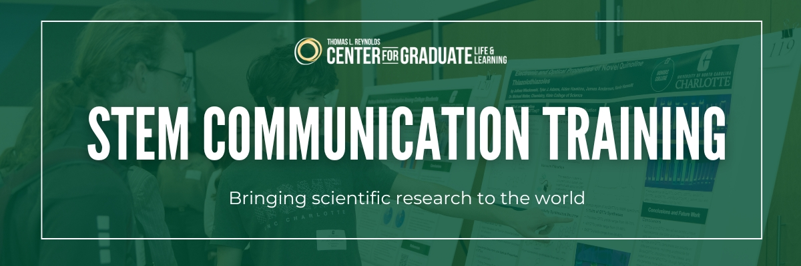
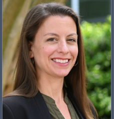

STEM Communication Training
STEM communication training helps graduate students turn complex STEM research into clear, compelling messages that amplify impact and career success. However, access to high-quality, robust training remains uneven across colleges and universities.
To fill this gap, researchers at UNC Charlotte developed the STEM Communication Training Program, a series of asynchronous, online mini-courses designed for graduate students in STEM disciplines. This content is freely available to use at other colleges and universities. Please explore our Course Library to access the training resources.
About the Program
This program is designed to equip participants with the necessary skills to articulate STEM concepts clearly and engagingly. The training is designed for online, asynchronous delivery with a course facilitator. The content was designed by STEM communication experts and practitioners working in the field with graduate students in mind. UNC Charlotte researchers Drs. Elise Demeter, Adam Reitzel, Aura Young and Jill Huerta curated the content and tested these trainings with UNC Charlotte PhD and Masters students. The content may also work for undergraduates engaged in STEM research. The development of this program was supported by NSF IGE award #2325453 "Applying Cognitive Theories of Learning to Improve Graduate Training in STEM Communication".
Dr. Elise Demeter
Director of Academic Research and Assessment, Office of Assessment & Accreditation
Dr. Adam Reitzel
Professor & Associate Dean of Research and Graduate Education, Klein College of Science

Dr. Aura Young
Interim Director, The Thomas L. Reynolds Center for Graduate Life & Learning
Learning Outcomes
Throughout the program, participants will delve into various aspects of STEM communication, including:
- Simplifying complex STEM topics for diverse audiences
- Delivering STEM presentations with clarity and enthusiasm
- Writing about STEM subjects for public consumption
- Utilizing multimedia tools like videos and data visualizations for effective communication
- Combating misinformation in the scientific realm
- Navigating cross-cultural and interdisciplinary communication challenges
Program Structure:
The program consists of 6 mini-courses. Each course is paced over 4 weeks. The courses can stand-alone or be mixed-and-matched. The course content may be adapted as needed for your institution and students. We ask that you credit the original course creators and the UNC Charlotte team.
| Course | Course Creator |
|---|---|
| 1. Cognitive Theories of Communication | Dr. Doug Markant, PhD: Professor of psychological science (UNC Charlotte) |
| 2. Talking About STEM Outside the Academy | Gabor Zsuppan: Museums and nonprofit content creator (Discovery Place Science Museum, Charlotte, NC, Carolina Raptor Center, Huntersville, NC) and Michelle Page: Program curator (Discovery Place Science Museums, Charlotte, NC) |
| 3. Effective STEM Communication Across Cultures and Disciplines | Dr. Sandeep Ravindran, PhD: Freelance writer and lecturer |
| 4. Effective STEM Writing for Expert and General Audiences | Angela Chen: Journalist and editor (Asterisk Magazine, WIRED, Vox), and author of Ace: What Asexuality Reveals About Desire, Society, and the Meaning of Sex |
| 5. Creating Effective STEM Visuals and Videos | Tom McNamara: Documentarian, journalist, and science content strategist |
| 6. Fighting Science Misinformation on Social Media (and Beyond) | Dr. Melanie Trecek-King, PhD: professor and creator of website Thinking is Power |
Feedback from the 2024-2025 Program
The effectiveness of this training was evaluated through an NSF-funded research study with graduate students at UNC Charlotte (NSF IGE award #2325453). Here are what past participants had to say about the training:
Whether this is with a dean of the college, a future colleague, or a stranger on the street with no knowledge of my work, I feel more confident in my ability to choose my approach to sharing my work appropriately with the given audience.
This training didn't just sharpen my communication skills but even it reshaped the way I think about my role as a scholar and communicator...These skills make me not just a better job candidate, but a more responsible and adaptive professional especially in an era where trust in science and clarity in communication are more important than ever.
Before, I wasn't sure how to present complex ideas in simple ways without losing accuracy, but this course gave me tools and examples that made it feel doable....It feels good to know that what I'm working on could actually make sense and matter to people outside the lab.
Interested in Bringing this Content to Your Campus?
We are freely sharing the STEM Communication Training course materials to other colleges & universities. Please explore the Course Library to access the available materials.
For a Canvas course export or for questions about the STEM Communication Training materials or implementation, please contact the project PI Dr. Elise Demeter at edemeter@charlotte.edu.